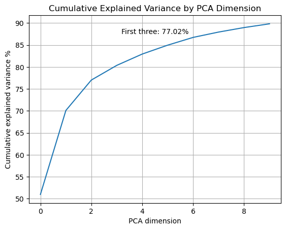
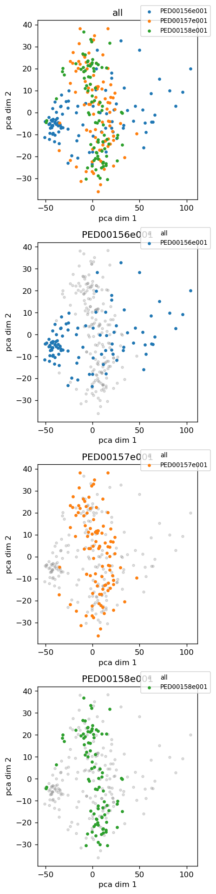
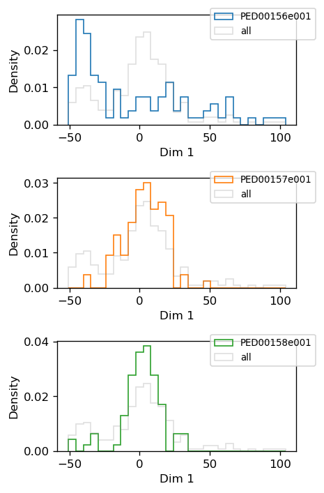
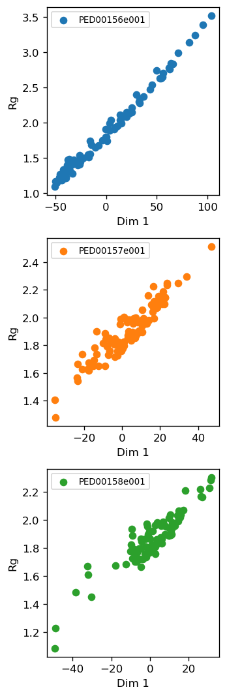
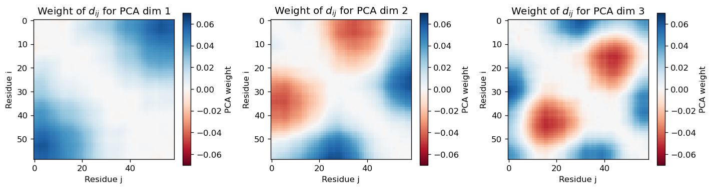

Dimensionality reduction based on distance-based features
Here, we demonstrate the application of various dimensionality reduction methods to visualize distance-based features in a reduced-dimensional space. As an example, we will focus specifically on three selected PED ensembles for N-terminal SH3 domain of Drk protein.
PED00156: This ensemble consists of conformations generated randomly and optimized through an iterative process.
PED00157: This ensemble includes conformations generated using the ENSEMBLE method, which creates a variety of realistic conformations of an unfolded protein.
PED00158: This ensemble is a combination of conformations from the RANDOM and ENSEMBLE pools
1- The first step is to extract the specific feature we wish to analyze.
analysis.extract_features(featurization='ca_dist' , min_sep=2 , max_sep=None)
{kind=link}
The extract_features function from “ensamble_analysis.py” is designed to extract specific features from a dataset related to proteins.
The parameters we can set are:
“featurization”: Choose between “ca_dist” and “rmsd” as distance-based features.
“normalize”: Whether to normalize the data. Only applicable to the “ca_dist” method. Default is False.
“min_sep”: Minimum separation distance for “ca_dist” methods. Default is 2.
“max_sep”: Maximum separation distance for “ca_dist” methods. Default is None.
After selecting the feature to extract, we can apply various dimensionality reduction methods using the reduce_features function. The parameters that can be set for this function are numerous and vary depending on the chosen reduction method.
We have provided a complete description on the hyperparameters related to each dimensionality reduction method in the methods’ overview section. Here we continue with the analysis of SH3 PED ensembles based on distance-based features and visualize the results using t-SNE and PCA method.
2- The second step is choosing dimensionality reduction method and hyperparameters.
analysis.reduce_features(method='tsne' ,perplexity_vals = [10, 20, 50,100, 150, 200, 250], circular=False, range_n_clusters=range(2,10,1));
Important point
Since we are analyzing the distance feature the circular parameter is set to False
3- The third step is the visualization of the results.
In this section, we will first demonstrate how to plot the results obtained from the t-SNE dimensionality reduction. Following that, we will apply PCA (Principal Component Analysis) and visualize the results
a- t-SNE visualisation
vis.dimensionality_reduction_scatter(color_by='rg', kde_by_ensemble=True, size=20, plotly=True);
{kind=link}
{kind=link}
b- PCA visualisation
First reduce feature using PCA method:
analysis.reduce_features(method='pca',num_dim = 10);
An then we have different visualization options here:
vis.pca_cumulative_explained_variance();
Plot the cumulative variance. Only applicable when the dimensionality reduction method is “pca”
{kind=link}
vis.pca_2d_landscapes()
Plot 2D landscapes when the dimensionality reduction method is “pca” or “kpca”
{kind=link}
vis.pca_1d_histograms()
Plot 1D histogram when the dimensionality reduction method is “pca” or “kpca”.
{kind=link}
vis.pca_rg_correlation()
Examine and plot the correlation between PC dimension 1 and the amount of Rg. Typically high correlation can be detected in case of IDPs/IDRs
{kind=link}
sel_dims = [0, 1, 2] # Dimensionality reduction feature we want to analyze
vis.pca_residue_correlation(sel_dims=sel_dims)
Plot the correlation between residues based on PCA weights.
{kind=link}